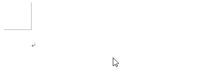

"カタカナ/ひらがな/ローマ字" 的意思就是 片假名/平假名/罗马字，
需要配合 Shift 和 Alt 键来使用: ① 单独按这个键，切换回默认的平假名输入模式; ② Shift + カタカナ/ひらがな/ローマ字 ，
切换回片假名输入模式; ③ Alt + カタカナ/ひらがな/ローマ字 ，
切换回罗马字输入模式;
许多键盘包含控制媒体功能的特殊键。越来越多的媒体设备，尤其是电视，
都支持网络。混合键盘/遥控设备(Hybrid keyboard/remote-control devices)
越来越普遍。为了满足这些混合 Web/媒体 设备的需求，
本规范定义了除传统键盘键外，常见的遥控器按钮(remote control buttons)。
由于尺寸较小，遥控器上的按键(或按钮)通常是模态的，
一个按键根据屏幕内容的上下文执行不同的功能。此外，
许多键用作切换键(toggles)，在两个或多个状态之间来回切换(请参见切换按键)。
这些遥控器按钮通常没有修饰符状态，因此每个按钮都被分配了一个功能
(如 Play 、 Pause 、 Up 、 Menu 或 Exit )。
"插入(Insert)"键可以切换输入模式。在插入模式(insert mode ，默认)下，
光标在当前位置插入一个字符，原来的字相应后移。在覆盖模式(overtype mode)
下，光标位置新输入字会替代原来的字。这一按键常在计算机终端中使用，
微软的 word 编辑器也有效果，其它可输入框可能无效。下面是在 word
编辑器中使用插入键的一个例子，

word 编辑器里的插入键示例，
在移动光标并打下"45678"后按下了插入键，切换成了覆盖模式
2.5.4. 系统和 GUI 键
系统和 GUI 键(System and GUI keys) ——左右两个 Meta 属于系统命令键(system command keys)，GUI 按键包括 Esc ， PrtScr SysRq ， Pause Break :
系统命令按键也就是 Meta 键，它实际上也是一种修饰符按键，
在不同的操作系统上有不同的键帽。 Meta 这个单词有变化之意，
在微软的 Windows 操作系统也常用于配合其它按键调用许多常见系统功能;
Meta 键是以前 MIT 计算机键盘上的的一个特殊键，例如 Symbolics Space-cadet
keyboard 就是 MIT Lisp 计算机上的由 Tom knight 设计的键盘，
后来 Sun 的键盘上也包含有此键，只不过标示为 Sun 的菱形徽标。现代，
这个按键发展到和操作系统相关联，在 Linux 和 BSD 操作系统上，它是 Super 键，在 Windows 操作系统上，它是 ⊞Win 键，在
MacOS 操作系统上 它是 ⌘Cmd ，虽然键帽不同，但是这个按键的 code 值都是 "MetaLeft" 或 "MetaRight" 。 查阅更多的按键信息，可以在维基百科上搜索 Meta Key ， Super Key ，
Command Key 或 Windows Key 。
起始键(Home Keys)，其标准符号为 ⇱ ，在现代 Microsoft Windows
文本编辑应用程序中，起始键主要用于将光标返回到移动所在行的开头。
当文本不可编辑时，起始键键用于返回到文档的开头; 如果 Ctrl + Home 一起按下，也可以在可编辑文本中将光标返回到文档开头; 如果 ⇧ Shfit + Home 一起按下，
可以选择光标所在行中光标之前的所有字符。
在 MacOS 和 Linux 操作系统中起始键会有类似的作用，以及在非 GUI
操作系统中会有不同的效果，在维基百科 Home key 中查阅更多信息。
终点键(End Keys)，其标准符号为 ⇲ ，该键的效果与 Home 按键相反，在现代 Microsoft Windows 文本编辑应用程序中，KYECAP{End}
键主要用于将光标移动到光标所在行的末尾。当文本不可编辑时，KYECAP{End}
键用于将光标滚动到文档的末尾; 如果 Ctrl + End 一起按下，
也可以在可编辑文本中将光标移动到文档末尾; 如果 ⇧ Shfit + Home 一起按下，可以选择光标所在行中光标之后的所有字符。
在 MacOS 和 Linux 操作系统中 End 键会有类似的作用，以及在非 GUI
操作系统中会有不同的效果，在维基百科 End key 中查阅更多信息。
箭头键(Arrow keys)，又称为光标移动键(cursor movement keys)，
设计它的目的是沿着指定方向移动光标。术语"光标移动键"与"箭头键"的区别在于，
前者可以指计算机键盘上指定用于光标移动的各种键中的任何一个，
而"箭头键"通常指四个特定键中的一个，通常用箭头标记。除了移动光标的功能外，
箭头键还有滚动网页内容，在文件资源管理器中更改当前选定文件/文件夹，
在图形软件中移动选定对象的位置，在 Windows 操作系统中与 ⊞ (详见 系统和 GUI 键 中的 Meta )
按键组合能将当前应用程序按照箭头方向进行分区。
向上翻页和向下翻页键(Page Up and Page Down keys)，
这两个键主要用于在文档中向上或向下滚动，但不同应用程序之间的滚动距离不同。
例如，在文本编辑器中，它们可以通过模拟实际的翻页进行跳转，
也可以通过屏幕视图进行跳转，在文档短于显示区域时， PgUp 和 PgDn 通常看不到效果。
This section defines a list of values which are appropriate for use as code values.
A key code attribute value is any of the values given in the
"KeyboardEvent.code" column of any of the tables in this section of the
specification.
Each table in this section has a "Required" column which indicates whether or not the
value is required for a conforming implementation. Entries where the "Required" column
is "No" are optional and may be used by implementations to support special keyboards
(such as multimedia or legacy keyboards).
Note: Some values listed in this specification as "Required" may not be available on
all platforms or devices. For example, Mac keyboards do not have an Insert key
whereas standard PC keyboards do not have a Help key.
For every key listed as "Required" in this specification, a conforming implementation
of the KeyboardEvent interface MUST return the correct value as long as that key
is available on that platform.
Note: While every attempt has been made to make this list of values as complete as possible,
new values will periodically need to be defined as new input devices are introduced.
Rather than allowing user agents to define their own key code attribute values (which are unlikely to be consistent across multiple user agents), bugs SHOULD be
filed so that this specification can be updated.
3.1. Alphanumeric Section
The alphanumeric section is the main section of the keyboard. It
contains keys that fall into two general
categories: writing system keys whose meaning
changes based on the current keyboard layout, and functional keys which are (mostly) the same for all
layouts.
3.1.1. Writing System Keys
The writing system keys are those that change
meaning (i.e., they produce different key values) based on the current locale and keyboard layout.
This figure shows a hypothetical keyboard that combines all the writing system keys (shown in blue and green) found on the
various keyboards. Blue keys are present on all standard
keyboards while green keys are only available on some keyboards.
The "Digit2" and "KeyQ" keys are writing system keys that
generate "2" and "q" when the US locale is
active and "é" and "a" when the French locale is active.
The name shown on each key is the code assigned to that key. Wherever possible, the code names are based on the name for the US
key in that position (i.e., they are based on the US keyboard
layout), which follows the naming convention found in [USB-HID].
For keys that don’t exist on the US keyboard, names from the UK or Japanese
layouts are used instead.
Note that there are two "Backslash" keys in this figure: a
large one at the end of Row D on the 101-key layout, and a
smaller one between "Quote" and "Enter" on Row C of the
102-, 104- and 106-key layouts. Only one "Backslash" key
may be present on a keyboard layout.
List of code values for writing system keys in the Alphanumeric section.
`~ on a US keyboard. This is the 半角/全角/漢字 (hankaku/zenkaku/kanji) key on Japanese keyboards
"Backslash"
Yes
Used for both the US \| (on the 101-key layout) and also for the key located between the " and Enter keys on row C of the 102-,
104- and 106-key layouts.
Labelled #~ on a UK (102) keyboard.
"BracketLeft"
Yes
[{ on a US keyboard.
"BracketRight"
Yes
]} on a US keyboard.
"Comma"
Yes
,< on a US keyboard.
"Digit0"
Yes
0) on a US keyboard.
"Digit1"
Yes
1! on a US keyboard.
"Digit2"
Yes
2@ on a US keyboard.
"Digit3"
Yes
3# on a US keyboard.
"Digit4"
Yes
4$ on a US keyboard.
"Digit5"
Yes
5% on a US keyboard.
"Digit6"
Yes
6^ on a US keyboard.
"Digit7"
Yes
7& on a US keyboard.
"Digit8"
Yes
8* on a US keyboard.
"Digit9"
Yes
9( on a US keyboard.
"Equal"
Yes
=+ on a US keyboard.
"IntlBackslash"
Yes
Located between the left Shift and Z keys. Labelled \| on a UK keyboard.
"IntlRo"
Yes
Located between the / and right Shift keys. Labelled \ろ (ro) on a Japanese keyboard.
"IntlYen"
Yes
Located between the = and Backspace keys. Labelled ¥ (yen) on a Japanese keyboard. \/ on a
Russian keyboard.
"KeyA"
Yes
a on a US keyboard. Labelled q on an AZERTY (e.g., French) keyboard.
"KeyB"
Yes
b on a US keyboard.
"KeyC"
Yes
c on a US keyboard.
"KeyD"
Yes
d on a US keyboard.
"KeyE"
Yes
e on a US keyboard.
"KeyF"
Yes
f on a US keyboard.
"KeyG"
Yes
g on a US keyboard.
"KeyH"
Yes
h on a US keyboard.
"KeyI"
Yes
i on a US keyboard.
"KeyJ"
Yes
j on a US keyboard.
"KeyK"
Yes
k on a US keyboard.
"KeyL"
Yes
l on a US keyboard.
"KeyM"
Yes
m on a US keyboard.
"KeyN"
Yes
n on a US keyboard.
"KeyO"
Yes
o on a US keyboard.
"KeyP"
Yes
p on a US keyboard.
"KeyQ"
Yes
q on a US keyboard. Labelled a on an AZERTY (e.g., French) keyboard.
"KeyR"
Yes
r on a US keyboard.
"KeyS"
Yes
s on a US keyboard.
"KeyT"
Yes
t on a US keyboard.
"KeyU"
Yes
u on a US keyboard.
"KeyV"
Yes
v on a US keyboard.
"KeyW"
Yes
w on a US keyboard. Labelled z on an AZERTY (e.g., French) keyboard.
"KeyX"
Yes
x on a US keyboard.
"KeyY"
Yes
y on a US keyboard. Labelled z on a QWERTZ (e.g., German) keyboard.
"KeyZ"
Yes
z on a US keyboard. Labelled w on an AZERTY (e.g., French) keyboard, and y on a
QWERTZ (e.g., German) keyboard.
"Minus"
Yes
-_ on a US keyboard.
"Period"
Yes
.> on a US keyboard.
"Quote"
Yes
'" on a US keyboard.
"Semicolon"
Yes
;: on a US keyboard.
"Slash"
Yes
/? on a US keyboard.
3.1.2. Functional Keys
The functional keys (not to be confused with the function keys described later) are those keys in the alphanumeric section that provide general editing
functions that are common to all locales (like Shift, Tab, Enter and Backspace). With a few
exceptions, these keys do not change meaning based on the
current keyboard layout.
The "AltRight" key (highlighted in green) is the only functional key that does not generate the same key value for every locale. In some locales it
produces "Alt" while in others it produces "AltGraph".
List of code values for functional keys in the Alphanumeric section.
Alt, Option or ⌥. This is labelled AltGr key on many keyboard layouts.
"Backspace"
Yes
Backspace or ⌫. Labelled Delete on Apple keyboards.
"CapsLock"
Yes
CapsLock or ⇪
"ContextMenu"
Yes
The application context menu key, which is typically found between the right Meta key and the right Control key.
"ControlLeft"
Yes
Control or ⌃
"ControlRight"
Yes
Control or ⌃
"Enter"
Yes
Enter or ↵. Labelled Return on Apple keyboards.
"MetaLeft"
Yes
The Windows, ⌘, Command or other OS symbol key.
"MetaRight"
Yes
The Windows, ⌘, Command or other OS symbol key.
"ShiftLeft"
Yes
Shift or ⇧
"ShiftRight"
Yes
Shift or ⇧
"Space"
Yes
(space)
"Tab"
Yes
Tab or ⇥
On some keyboards (notably Japanese and Korean) the spacebar is
reduced in size to make room for extra keys on the bottom row (Row A).
These keys typically allow the users to change the current input
mode. Note that even though some of these Japanese and Korean
keys occupy the same physical location on the keyboard, they use
different code values.
Comparison of the lower row of functional keys on different keyboards
List of code values for functional keys found on Japanese and Korean keyboards.
Korean: HangulMode 한/영 (han/yeong) Japanese (Mac keyboard): かな (kana)
"Lang2"
No
Korean: Hanja 한자 (hanja) Japanese (Mac keyboard): 英数 (eisu)
"Lang3"
No
Japanese (word-processing keyboard): Katakana
"Lang4"
No
Japanese (word-processing keyboard): Hiragana
"Lang5"
No
Japanese (word-processing keyboard): Zenkaku/Hankaku
"NonConvert"
Yes
Japanese: 無変換 (muhenkan)
On Apple keyboards, some keys on the bottom row are omitted and
others are arranged in a different order.
3.2. Control Pad Section
The control pad section of the keyboard is the set of (usually 6) keys
that perform navigating and editing operations, for example, Home, PageUp and Insert.
The numpad section is the set of keys on the keyboard arranged in
a grid like a calculator or mobile phone. This section contains numeric and
mathematical operator keys. Often this section will contain a NumLock key which causes the keys to switch between the standard numeric functions
and mimicking the keys of the control pad and arrow pad.
Laptop computers and compact keyboards will commonly omit these
keys to save space.
The code values in this section should also be
used for phone keypads and remote control devices that
arrange number keys in a grid.
Standard Mobile Keypad Layout
The standard numpad is sometimes extended with additional keys for
parentheses, operators, hexadecimal symbols, or calculator functions
(like Backspace). Some of the commonly added keys are listed
in the table below.
List of code values for keys in the Numpad section.
On the Mac, the "NumLock" code should be used for the numpadClear key.
"Numpad0"
Yes
0 Ins on a keyboard 0 on a phone or remote control
"Numpad1"
Yes
1 End on a keyboard 1 or 1 QZ on a phone or remote control
"Numpad2"
Yes
2 ↓ on a keyboard 2 ABC on a phone or remote control
"Numpad3"
Yes
3 PgDn on a keyboard 3 DEF on a phone or remote control
"Numpad4"
Yes
4 ← on a keyboard 4 GHI on a phone or remote control
"Numpad5"
Yes
5 on a keyboard 5 JKL on a phone or remote control
"Numpad6"
Yes
6 → on a keyboard 6 MNO on a phone or remote control
"Numpad7"
Yes
7 Home on a keyboard 7 PQRS or 7 PRS on a phone or remote control
"Numpad8"
Yes
8 ↑ on a keyboard 8 TUV on a phone or remote control
"Numpad9"
Yes
9 PgUp on a keyboard 9 WXYZ or 9 WXY on a phone or remote control
"NumpadAdd"
Yes
+
"NumpadBackspace"
No
Found on the Microsoft Natural Keyboard.
"NumpadClear"
No
C or AC (All Clear). Also for use with numpads that have a Clear key that is separate from the NumLock key. On the Mac, the numpadClear key should always
be encoded as "NumLock".
"NumpadClearEntry"
No
CE (Clear Entry)
"NumpadComma"
No
, (thousands separator). For locales where the thousands separator is a "." (e.g., Brazil), this key may generate a ..
"NumpadDecimal"
Yes
. Del. For locales where the decimal separator is "," (e.g., Brazil), this key may generate a ,.
"NumpadDivide"
Yes
/
"NumpadEnter"
Yes
"NumpadEqual"
No
=
"NumpadHash"
No
# on a phone or remote control device. This key is typically found below the 9 key and to the right of the 0 key.
"NumpadMemoryAdd"
No
M+ Add current entry to the value stored in memory.
"NumpadMemoryClear"
No
MC Clear the value stored in memory.
"NumpadMemoryRecall"
No
MR Replace the current entry with the value stored in memory.
"NumpadMemoryStore"
No
MS Replace the value stored in memory with the current entry.
"NumpadMemorySubtract"
No
M- Subtract current entry from the value stored in memory.
"NumpadMultiply"
Yes
* on a keyboard. For use with numpads that provide mathematical operations (+, -, * and /). Use "NumpadStar" for the * key on phones and remote controls.
"NumpadParenLeft"
No
( Found on the Microsoft Natural Keyboard.
"NumpadParenRight"
No
) Found on the Microsoft Natural Keyboard.
"NumpadStar"
No
* on a phone or remote control device. This key is typically found below the 7 key and to the left of
the 0 key. Use "NumpadMultiply" for the * key on
numeric keypads.
"NumpadSubtract"
Yes
-
For numpads that provide keys not listed here, a code value string should be created by starting
with "Numpad" and appending an appropriate description of the key.
3.5. Function Section
The function section runs along the top of the keyboard (above
the alphanumeric section) and
contains the function keys and a few additional special keys
(for example, Esc and Print Screen).
A function key is any of the keys labelled F1 ... F12 that an application or operating system can associate with a custom function
or action.
On some keyboards (especially those found on laptops or other
portable computers), the function keys (F1 ... F12) are defined to have other primary functions (like
controlling display brightness or audio volume) and require that a
separate Fn key be pressed to make them act as function
keys. Unfortunately, the primary functions assigned to these keys
varies widely from one manufacturer to the next. Because of this,
the code is always set to the function key name.
List of code values for keys in the Function section.
Fn This is typically a hardware key that does not generate a separate code. Most keyboards do not place this key in the function section, but it is
included here to keep it with related keys.
"FnLock"
No
FLock or FnLock. Function Lock key. Found on the Microsoft Natural Keyboard.
"PrintScreen"
Yes
PrtScr SysRq or Print Screen
"ScrollLock"
Yes
Scroll Lock
"Pause"
Yes
Pause Break
For keyboards that provide more than 12 function keys, the code value follows the pattern shown above with
"F" followed by the function key number - "F13", "F14", "F15", and so on.
Media keys are extra keys added to a keyboard that provide media related functionality like play, pause or volume control. These keys do not
have a standard location on the keyboard so keyboards from different
manufacturers are likely to have a different arrangement of keys or a
completely different sets of keys.
Media keys are often distinct from
normal typing keys in appearance and may be recessed in the
keyboard.
On laptop keyboards, these keys are often merged with the function keys, with the media key interpretation being
the primary function of the key and the function key interpretation requiring the Fn key to be pressed at the
same time. In this configuration the code should
be set to match the function key ("F1" ... "F12").
When the keys are merged in this fashion, the code values are taken from the function key value because the media key value is not consistent across keyboards.
Use for dedicated ひらがな key found on some Japanese word processing keyboards.
"Katakana"
No
Use for dedicated カタカナ key found on some Japanese word processing keyboards.
And finally, the following code value should only
be used when the corresponding key does not correspond to any of the code values given elsewhere in this specification.
This value is appropriate for use with virtual keyboards that do not
have their keys arranged in a way that corresponds to those on a
physical keyboard.
This value code should be used when no other value given in this specification is appropriate.
Conforming implementations MUST only use "Unidentified" as a key code
when there is no way for the implementation to determine the key code.
Exposing only this value MUST NOT indicate a conforming implementation.
4. Accessibility
This specification simply defines a set of values that are valid for use in the code attribute. Thus, it does not introduce any features that have
accessibility concerns.
The FAST checklist has been completed and nothing is applicable to this specification.
A note related to the FAST checklist item: "If technology provides internationalization support".
This specification inherently defines code values for keyboards and provides
human-readable names (like "ShiftLeft", "ControlRight", "AltGr" or "KeyQ").
These special key values are defined as human-readable strings so that code to detect special keys
can be easier to understand. While these values are not intended to be exposed directly to users,
there is nothing preventing that. Apps that choose to expose these values would need to determine
whether or not it is appropriate to translate these strings for presentation (e.g.: presenting
"Backspace" as "Suppr. arrière" for French users).
5. I18n
The short I18n checklist has been completed and the following item requires a comment:
"describes a format or data that is likely to need localisation":
This specification defines values that are not intended for display to the user, although there
is nothing preventing sites from exposing these values.
2.1 What information might this feature expose to Web sites or other parties, and for what purposes is that exposure necessary?:
This spec defines a set of valid values for the code attribute of the various
key events. This is necessary to provides a platform-independent way of identifying which physical
key (by location) has been pressed (for example, WASD keys in games).
2.17 How does your feature handle non-"fully active" documents?:
This attribute is only associated with key events, and events are not sent if the document is
not fully active.
Security concerns associated with the code attribute are addressed in the [UIEvents] specification.
2.6 Do the features in your specification expose information about the underlying platform to origins?:
The code attribute contains a platform-independent "scancode" value for the key pressed by the user.
There are a few special `code` values that can be used to identify particular keyboards.
For example, `IntlBackslash`, `IntlRo` and `IntlYen`. The user would have to type these keys for
the information to be exposed.
3.5 Legitimate Misuse:
A site could capture all keypresses and build a map of the values generated by the keyboard. If the
user types enough values (and doesn’t change keyboard), then the site could try to match those values
against a database of known keyboard layouts to guess the user’s current keyboard layout. However,
that’s a concern for the key attribute itself (defined in the [UIEvents] specification) rather than
something specific to the values defined in this document
Privacy concerns associated with the code attribute are addressed in the [UIEvents] specification.
8. Acknowledgements
Considerable thanks are due to the following participants of the WebApps
Working Group for providing substantial material contributions in the
process of developing this specification.
Gary Kacmarcik (Google),
Masayuki Nakano (Mozilla)
Conformance
Document conventions
Conformance requirements are expressed
with a combination of descriptive assertions
and RFC 2119 terminology.
The key words “MUST”, “MUST NOT”, “REQUIRED”, “SHALL”, “SHALL NOT”, “SHOULD”, “SHOULD NOT”, “RECOMMENDED”, “MAY”, and “OPTIONAL”
in the normative parts of this document
are to be interpreted as described in RFC 2119.
However, for readability,
these words do not appear in all uppercase letters in this specification.
All of the text of this specification is normative
except sections explicitly marked as non-normative, examples, and notes. [RFC2119]
Examples in this specification are introduced with the words “for example”
or are set apart from the normative text
with class="example",
like this:
This is an example of an informative example.
Informative notes begin with the word “Note”
and are set apart from the normative text
with class="note",
like this:
Note, this is an informative note.
Conformant Algorithms
Requirements phrased in the imperative as part of algorithms
(such as "strip any leading space characters"
or "return false and abort these steps")
are to be interpreted with the meaning of the key word
("must", "should", "may", etc)
used in introducing the algorithm.
Conformance requirements phrased as algorithms or specific steps
can be implemented in any manner,
so long as the end result is equivalent.
In particular, the algorithms defined in this specification
are intended to be easy to understand
and are not intended to be performant.
Implementers are encouraged to optimize.